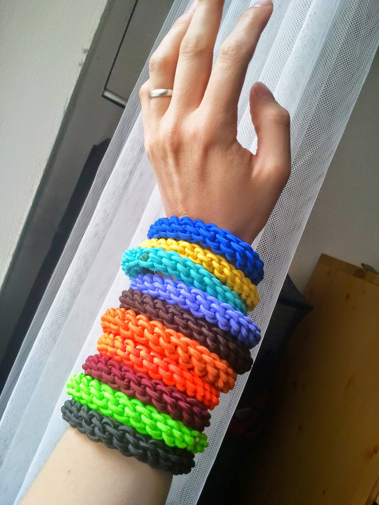
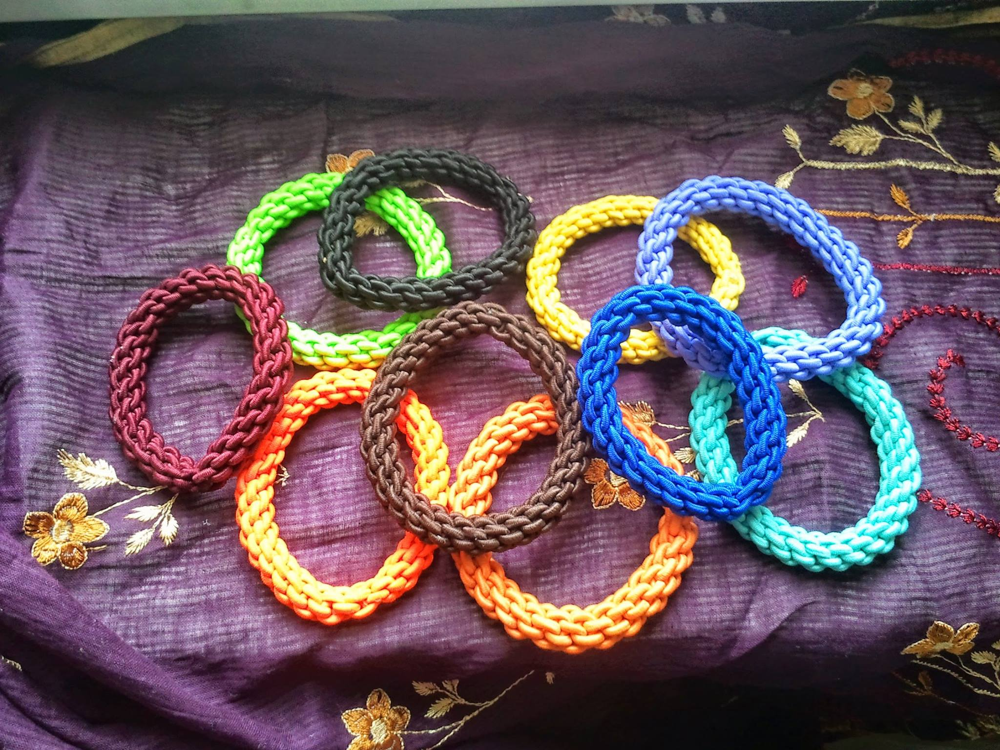

Je libo...
- Rasta copánky
- Francouzské copánky
- Úpravy dreadů
-
Volné termíny
- Henna
- Karetky
-
- Fotogalerie
- Ceník
- Kontakt
- Vzkazy
- Odkazy
Evanii - rasta copánky v Brně
Vítejte na mých stránkách!
Najdete zde hlavně prezentaci afroúčesů (rasta copánky, francouzské copánky a další), jejichž pletením se již více jak 10 let zabývám a stále mě to moc baví. Kromě toho zde naleznete několik ukázek dalších mých prací, například malování hennou.
V případě zájmu o mé služby mě neváhejte kontaktovat. Tvořím v Brně. Případné dotazy ráda zodpovím.
Proč copánky od nás?
Těšíme se na Vás!
Novinky
::Volné termíny
Mám momentálně obsazené všechny termíny na rasta copánky do konce října. Objednávky na listopad a dále znovu otevřu pravděpodobně začátkem září. Na francouzské a boxerské copánky pár prázdninových termínů ještě zbývá :-) Díky za pochopení!
::Gumičky
Díky Míše z Rasta4U tu mám pro vás pěknou zásobu ručně vyráběných úžasných a krásných gumiček, které jsou naprosto ideální na rasta copánky. Krásně drží, nevytahují se a nadělají spoustu parády - sama je používám na své copánky, takže vím, o čem mluvím:-) K čerstvě zapleteným copánkům si rovnou můžete nějakou odnést. Gumičky jsou k mání za 50 Kč. Nabízím také praktické čelenky, které u mě můžete pořídit od 50 do 150 Kč.
 

{kind=link}
{kind=link}